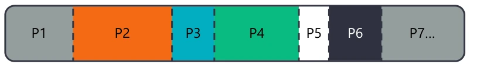
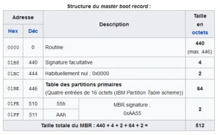
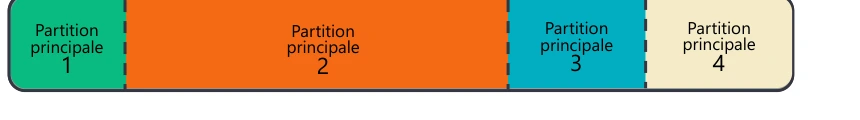
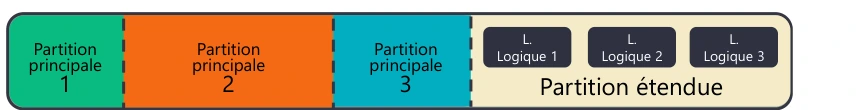
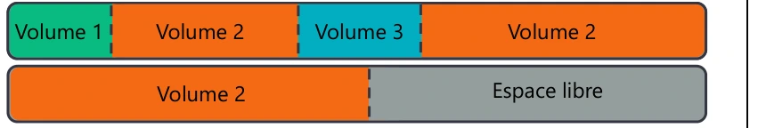
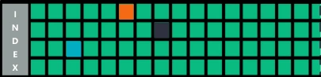
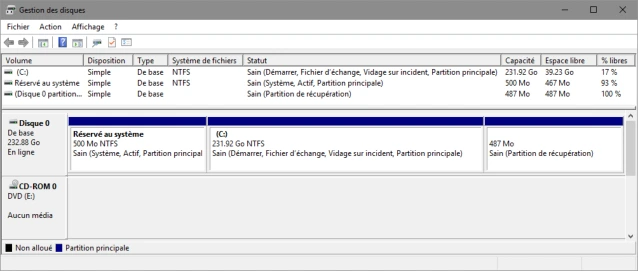
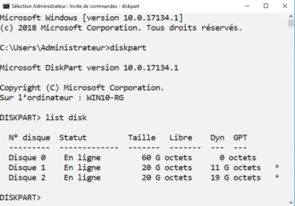

Transcription du document de formation. Les paragraphes, listes, tableaux et visuels isolés suivent l’ordre du document ; les aides pédagogiques sont séparées.
Partitionner un disque, c’est le « séparer » en plusieurs « portions » logiques, étanches et indépendantes. Le schéma représente les portions P1, P2, P3, P4, P5, P6, P7…

| Élément du MBR représenté | Taille |
|---|---|
| Routine | 440 octets, au maximum 446 |
| Signature facultative | 4 octets |
Valeur habituellement nulle, 0x0000 |
2 octets |
| Table des partitions primaires, quatre entrées de 16 octets | 64 octets |
Signature MBR 0x55, 0xAA, soit 0xAA55 |
2 octets |
| Total | 512 octets |


Le schéma représente Partition principale 1, Partition principale 2, Partition principale 3, puis une Partition étendue contenant L. Logique 1, L. Logique 2, L. Logique 3 et Espace libre.
Le schéma représente Volume 1, Volume 2 et Volume 3, puis Volume 2 étendu et Espace libre.


Le schéma GPT représente un Protective MBR, une en-tête GPT primaire, les entrées de partitions 1 à 128, les partitions, puis les entrées et l’en-tête GPT secondaires en fin de disque.
Le schéma « GUID Partition Table Scheme » contient les repères suivants :
| Repère LBA | Libellé représenté |
|---|---|
| LBA 0 | Protective MBR |
| LBA 1 | En-tête de la partie Primary GPT, zone étiquetée Partition 1 dans le dessin |
| LBA 2 à LBA 33 | Entry 1, Entry 2, Entry 3, Entry 4 ; Entries 5-128 |
| LBA 34 et suivants | Partition 1, Partition 2, Remaining Partitions |
| LBA -34 | Fin des partitions |
| LBA -33 à LBA -2 | Entry 1, Entry 2, Entry 3, Entry 4 ; Entries 5-128, partie Secondary GPT |
| LBA -1 | Secondary GPT Header |

| Système de fichiers | Caractéristiques du support |
|---|---|
| FAT16 / FAT32 — File Allocation Table | Historique ; standard ; « volume de 4 Go maximum » dans le support ; non sécurisé nativement. |
| ReFS — Resilient File System | Évolution de NTFS ; taille des volumes présentée comme quasi illimitée ; correction proactive des erreurs. |
| Autres | Ext4, VMFS, UDF et des dizaines d’autres. |
Les outils de gestion : avec la console graphique diskmgmt.msc.

Les outils de gestion : avec diskpart, outil en ligne de commande très utilisé en production.
Les outils de gestion : avec les cmdlet PowerShell.
Get-Disk : relever le numéro du nouveau disque.Initialize-Disk -Number <numéro relevé> : par défaut en GPT. Il faut préciser le paramètre -PartitionStyle MBR pour la rétrocompatibilité.New-Partition -DiskNumber <numéro relevé> -UseMaximumSize -AssignDriveLetter.Set-Partition -DiskNumber <numéro relevé> -PartitonNumber <numéro relevé> -NewDriveLetter <lettre de votre choix>. La graphie PartitonNumber est celle de la diapositive source.Format-Volume -DriveLetter <lettre de lecteur> : format par défaut en NTFS. Votre volume est prêt à l’utilisation.
Gestion du stockage.
Gérer le stockage avec la console graphique, DiskPart et PowerShell.
Recette pour bien utiliser le stockage : 1. Installer le média dans l’ordinateur. 2. Initialiser. 3. Partitionner. 4. Installer le système de fichiers. 5. Attribuer une lettre de lecteur ou un point de montage.